FastStone Capture 是一款抓屏工具，体积小巧、功能强大。我也是在不经意间使用下载了此软件，并不知道这是一款商用软件，用了一段时间竟然出现使用结束对话框。
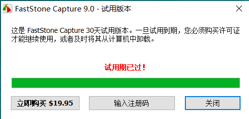
本着好奇心和认真学习的态度尝试逆向此软件。
01-样本概况
1.1-应用程序信息
1 | 软件名称：FastStone Capture |
1.2-分析环境及工具
- 系统环境：Windows10-64位、Windows7-32位
- 工具：x64dbg、IDA、IDR-Delphi反编译
1.3-分析目标
- 分析算法
02-具体分析过程
2.1-可执行文件信息
2.2-定位关键函数
将程序载入x64dbg和IDR，在一些通获取用户输入的API下断点，或是搜错误提示字符串。
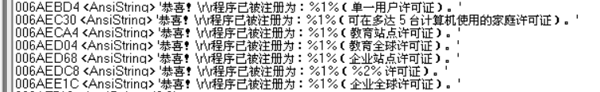 可以看出这个程序至少包含5种以上的许可证。定位到以上字符串地址，能在附近找到注册回调函数。
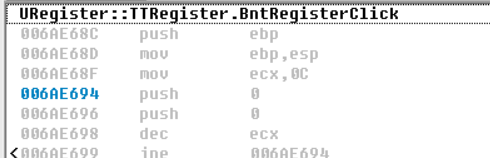 一旦定位了关键函数，分析已经是胜利一半了，接下来要结合x64dbg和IDR就能较快分析程序具体流程。
2.2-分析关键函数
假设输入的名字为hello,注册码为APAMAIBDBBCCCCCDDDDD
- 经过分析，可以了解到注册函数的整体框架，一共5次检测，无论那次失败，最终跳转到错误提示，检测1到5依次判断。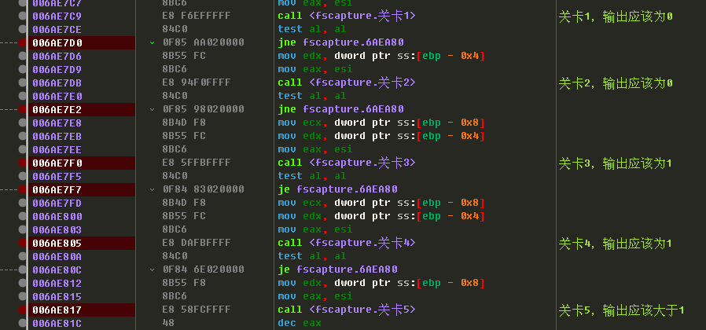
- 接下来看看进入这些检测前程序是如何处理名字(注册名)和注册码。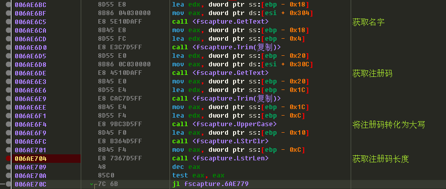 可以看出，注册码被转化为大写，其实在注册码输入框中显示就是大写字母(无论是否切换大小写),之后便判断注册码的长度，如果为0，注册失败。
- 接下来是一个遍历注册码(大写)的大循环，每隔5字母中添加一个字符’-‘，最后产生一个新的字符串。

- 检测1的分析，输入3得到的字符串，将其中的字符’-‘去掉，获得新的字符串。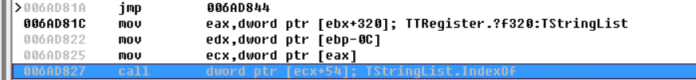 这是关键函数，判断新的字符串是否在一个列表中，在其中的话，检测1输出1，不在输出0，猜测应该是有系序列号被'拉黑'的非法注册码，要保证合法的注册码不在其中，至于这个列表中到底有那些字符串，并未去深挖，但从运行结果来看，似乎无论输入什么注册码，检测1总是输出0，就好像是摆设一样，所以对其并为过多深究。
- 检测2与检测1类似功能。
- 检测3的分析，输入步骤3得到的字符串和名字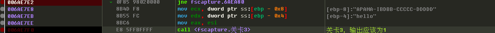
要找到什么会影响检测3的输出
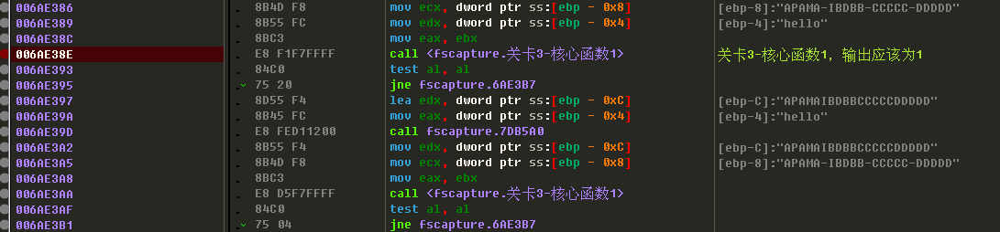
会运行两次检测3-核心函数1，如果两次都输出为0,那么检测3输出为0。
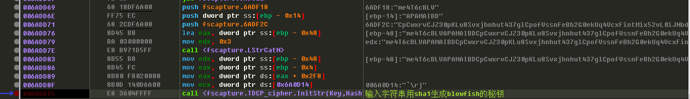 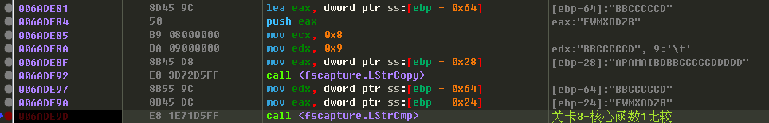 可以简单总结为，注册码前8位和名字决定了注册码的9-16位。分别用了两次对称加密算法，加密算法用了分别用了SHA1和SHA512来计算密钥。用python来计算生成密钥，结果与程序一致，但是加密结果却不一致，原因未知。
1
2
3
4
5
6
7
8
9
10
11
12
13
14
15
16
17
18
19
20
21
22检测3-核心函数1的分析
1. 将名字，注册码变成大写
2. 注册码长度应该为20，将注册码中‘-’去掉
3. 提取注册码前8位APAMAIBD
4. 将3得到的注册码放置在名字偶数位中得到HAEPLALMOAIBD
5. 将3得到的注册码另外两个字符串连接
'me4T6cBLV'+
'APAMAIBD'+
'CpCwxrvCJZ30pKLu8Svxjhnhut437glCpofVssnFeBh2G0ekUq4VcxFintMix52vL0iJNbdtWqHPyeumkDUC+4AaoSX+xpl56Esonk4='
6. 根据5得到的字符串用sha1生成blowfish的秘钥
7. 将3得到的注册码与'96338'与4得到的字符串连接
'APAMAIBD'+
'96338'+
'HAEPLALMOAIBD'
8. 根据7得到的字符串用sha512生成idea的秘钥
9. 应用6中的加密系统加密4得到的字符串
GbMe/oqPxOzcvxCYhw==
10. 应用8中的加密系统加密9得到的字符串
aEW7fyam24ntMXjODZBOTMDNPLQ=
11. 提取10中的前8个大写字母
EWMXODZB
12, 比较注册码后8位与11得到的字符串相同则结果为1 - 检测4与与检测3类似，也有一个检测4-核心函数1。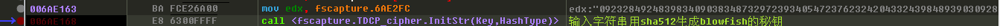 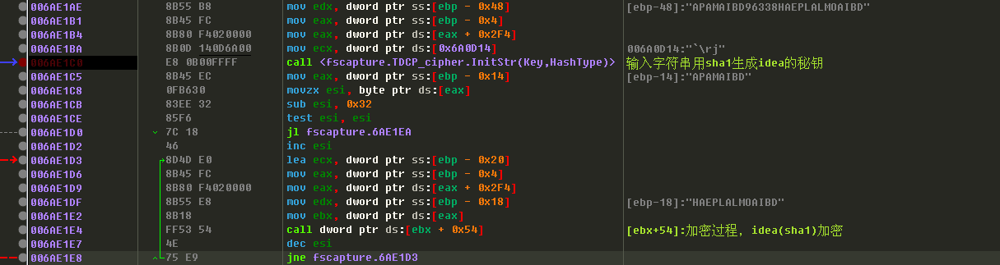 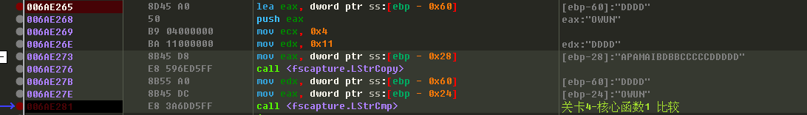 也可以总结为，注册码前8位和名字决定了注册码的后4位。用了与检测3-核心函数1一样的加密算法，但计算密钥的方法调换了。
1
2
3
4
5
6
7
8
9
10
11
12
13
14
15
16
17
18检测4-核心函数1的分析
1. 将名字，注册码变成大写
2. 注册码长度为20 将注册码中‘-’去掉
3. 提取注册码前8位 APAMAIBD
4. 将3得到的注册码放置在名字偶数位中得到HAEPLALMOAIBD
5. 根据以下字符串(常量)用sha512生成blowfish的秘钥
09232849248398340903834873297239340547237623242043324398489390309284343843223493299435
6. 将3得到的注册码与'96338'与4得到的字符串连接
'APAMAIBD'+
'96338'+
'HAEPLALMOAIBD'
7. 根据6得到的字符串用sha1生成idea的秘钥
8. 用3字符的第一个字母('A')减去0x32得到一个数n=0xF用4得到的字符串,不断用idea加密,次数为n+1得到BQpsiNnacbPngmqP9A==
9. 用blwofish加密8得到的字符串
OgWxUNe+KiqNEnaNt0bk769Yg3A=
10. 提取9中的前4个大写字母
OWUN
11. 比较注册码后4位与10得到的字符串，相同则结果为1 - 通过步骤检测3和检测4的分析可知，注册码长20位，可以根据注册码前8位和名字计算出整个注册码。接下来检测5的分析。也就是说第4，8，6，2位上的字母需要分别为’M’,’D’,’I’,’O’之后的字母才能保证结果大于等于1。这个结果的大小决定了到底使用了那种许可证。
1
2
3
4
5
6
7
8
9检测5分析
1. 将名字，注册码变成大写
2. 注册码长度为20 将注册码中‘-’去掉
3. 依次将注册码第4,8,6,2位提取，减去一个常数，转化为字符
第4个 - 4d > M
8 - 44 > D
6 - 49 > I
2 - 4f > O
以上4字符个依次连接，并将生成的字符串转化为数字，要保证数字大于等于1 - 综上述，最终的注册码应该为APAMAIBDEWMXODZBOWUN 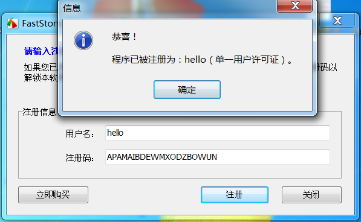 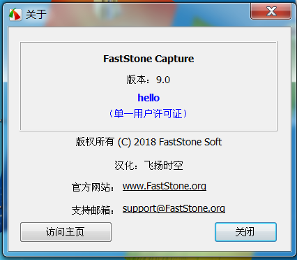
- 显示注册成功之后还有一个步骤，写入数据库，可以通过在读写文件API下断点分析其如何存储用户名以及注册码。

{kind=link}
{kind=link}
{kind=link}
{kind=link}
{kind=link}
{kind=link}
{kind=link}
{kind=link}
{kind=link}
{kind=link}
{kind=link}
{kind=link}
{kind=link}
{kind=link}
{kind=link}
{kind=link}
{kind=link}
注册机编写
本来想用python写注册机，但发现blowfish加密结果与程序实际加密结果不一致，未能编写成功，故尝试用x64dbg脚本。